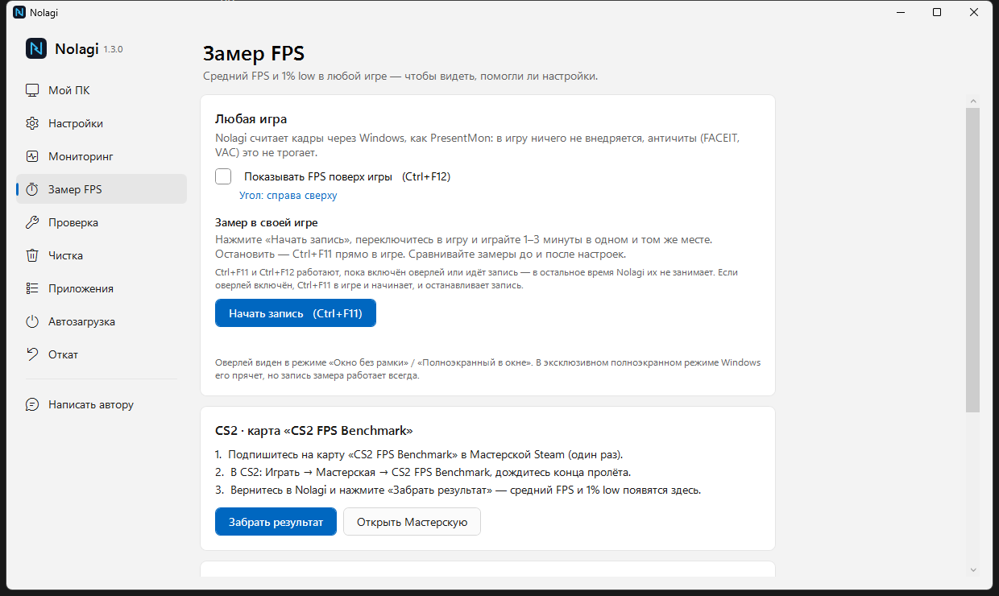
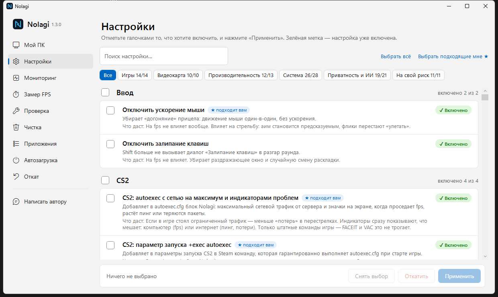

Что умеет Nolagi
Не «сто твиков из интернета», а только то, что подходит вашему ПК. У каждой настройки написано, что она делает и какой эффект даёт.
Настройки под ваш ПК
Около 100 настроек Windows, видеокарты, CS2 и Dota 2. Отметка «подходит вам» — по вашему железу.
Откат одной кнопкой
Любую настройку можно вернуть по одной или все сразу. Перед применением — точка восстановления Windows.
FPS в любой игре
Оверлей поверх игры и запись замера: средний FPS, 1% и 0.1% low, сравнение «до и после».
Мониторинг
Температура и частоты видеокарты, загрузка ядер, память — и почему видеокарта сбрасывает частоты.
Проверка ПК
Одна планка памяти, выключенный Resizable BAR, монитор не на своей частоте, здоровье дисков.
Чистка и автозагрузка
Временные файлы, кэши, лишние программы в автозагрузке и предустановленный мусор Windows.
Замер FPS без внедрения в игру
Nolagi считает кадры через Windows — так же, как PresentMon. В процесс игры ничего не внедряется, поэтому античиты это не трогает.
- Ctrl+F12 — FPS, 1% low и температура видеокарты поверх игры
- Ctrl+F11 — запись замера прямо в игре
- График по секундам и сравнение с прошлым замером
- Карта «CS2 FPS Benchmark» — результат забирается сам

Чего Nolagi не делает никогда
Многие оптимизаторы «заодно» ослабляют защиту Windows. FPS от этого не растёт, а проблемы с античитом — бывают.
- Не выключает Защитник Windows, UAC и изоляцию ядра
- Не отключает обновления безопасности
- Не трогает загрузчик (bcdedit) и защиты процессора
- Не ставит драйверы и не висит в фоне
- Не «чистит оперативку» и не обещает +200% FPS

Мифы, которые не поднимают FPS
В программе есть отдельный раздел с объяснениями. Коротко:
Как установить
Установка не нужна — один файл.
Кнопка «Скачать» выше. Файл с официальной страницы проекта на GitHub.
Windows покажет синее окно «Windows защитила ваш компьютер» — так бывает с бесплатными программами без платной подписи. Нажмите «Подробнее» → «Выполнить в любом случае».
Nolagi проверит ПК и отметит подходящие настройки. Сделайте замер FPS до и после — увидите разницу.
Вопросы
Безопасно ли для FACEIT и VAC?
Да. Nolagi не ставит драйверы, не внедряется в игры и не выключает Защитник Windows, UAC и изоляцию ядра. Для CS2 используются только штатные команды игры и настройки Windows и драйвера видеокарты.
Можно ли вернуть всё как было?
Да. Каждое изменение записывается в журнал: на вкладке «Откат» можно вернуть одну настройку или все сразу. Перед применением создаётся точка восстановления Windows.
Сколько FPS прибавит?
Зависит от компьютера. На системе, которую никто не настраивал, обычно заметно ровнее кадры и выше 1% low. На уже настроенной — немного. Поэтому в программе есть замер: проверьте сами, до и после.
Антивирус ругается — это вирус?
Нет. Некоторые антивирусы с «умными» эвристиками реагируют на программы, которые меняют настройки Windows и не подписаны платным сертификатом. Код Nolagi открыт: каждую настройку можно прочитать на GitHub.
Что программа отправляет в интернет?
Проверку обновлений и анонимный счётчик запусков. Статистику о ПК — только с вашего согласия, его можно выключить в любой момент. Подробно — в PRIVACY.md.
Попробуйте на своём ПК
Бесплатно, без регистрации и рекламы. Не понравится — «Откат» вернёт всё как было.